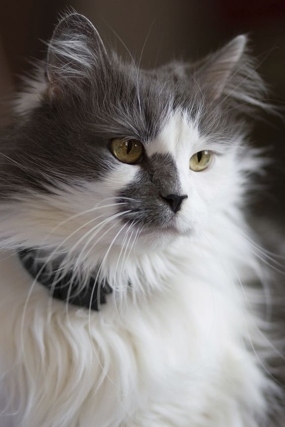
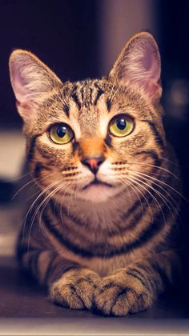
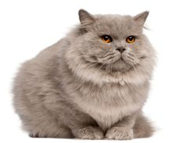
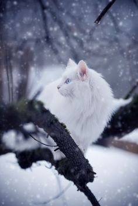
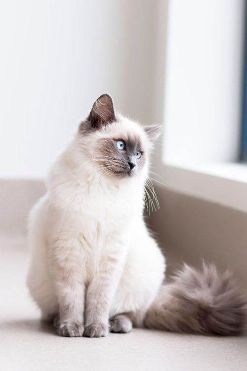
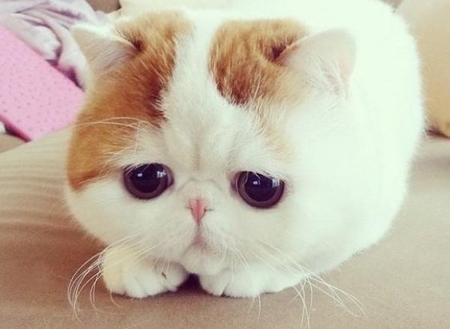

Người ta gọi mèo Sphynx là mèo Ai Cập không phải vì Sphynx có nguồn gốc từ mảnh đất sinh ra các Pharaoh mà bởi vì ngoại hình của nó. Ban đầu người ta chỉ gọi là mèo không lông. Nhưng vì ngoại hình của chúng khá giống với bức tượng nhân sư ở Ai Cập nên cái tên mèo Ai Cập, mèo nhân sư ra đời.
Thực chất, Shynx là giống mèo bị đột biến gen tự nhiên không thông qua cấy ghép, giống mèo này xuất hiện một cách rất tình cờ. Vào năm 1966, ở Toronto, Canada có một chú mèo con ra đời là kết quả của cuộc giao phối giữa hai chú mèo khác. Trong khi mèo bố mẹ hoàn toàn bình thường thì trên người mèo con lại trụi hết sạch lông, trông rất hoang dã. Người ta đã cố gắng gây giống nhưng bị thất bại vì giống mèo không lông này gặp nhiều vấn đề về sức khỏe.
Tưởng chừng sẽ biến mất mãi mãi trong lịch sử loài mèo thì đến thập niên 70, Sphynx lại quay trở lại một lần nữa cũng chính tại đất nước Canada. Lúc này khoa học công nghệ phát triển, bằng rất nhiều nỗ lực gây giống, những chú mèo không lông đã có được quần thể gen đủ lớn và khỏe mạnh để hình thành nên giống mèo Sphynx ngày nay.

Mèo Angora Thổ Nhĩ Kỳ (tiếng Thổ Nhĩ Kỳ: Ankara kedisi, tiếng Anh:Ankara cat hoặc Turkish Angora) là một giống mèo nhà. Angora Thổ Nhĩ Kỳ là một trong những giống mèo cổ đại, tự nhiên, có nguồn gốc ở miền trung Thổ Nhĩ Kỳ, ở vùng Ankara. Giống mèo này đôi khi được gọi với các cái tên đơn giản hơn là mèo Angora hoặc mèo Ankara.
Mèo Angora Thổ Nhĩ Kỳ có bộ lông dài, mượt sang trọng và thân hình khá gồ ghề. Mặc dù loài này được biết đến với một bộ lông lung linh màu trắng, mèo Angora Thổ Nhĩ Kỳ có thể có bộ lông với nhiều màu sắc khác nhau.
Đôi mắt loài này có thể có màu xanh dương, xanh lá cây, hổ phách, màu vàng hoặc có màu không đồng nhất (ví dụ: một mắt màu xanh dương và một mắt màu hổ phách hoặc màu xanh lá cây). Tai nhọn, lớn và rộng. Đôi mắt có hình dáng hạnh nhân và hình dáng một bên mặt tạo thành hai mặt phẳng thẳng. Đuôi thường dựng thẳng, vuông góc với lưng.

Nguồn gốc của nòi mèo này là một giống mèo Anh có lông dài. Giống mèo thủy tổ này sau nhiều đời lai với những giống mèo lông dài ngoại nhập khác đã hấp thu nhiều yếu tố di truyền của các nòi mèo lông dài ở Ba Tư và hình thành kiểu hình với bộ lông dài và dày đặc trưng - thậm chí còn dày hơn cả những con mèo Ba Tư nguyên thủy. Ở đây mèo lông dài Anh và mèo Ba Tư có một mối quan hệ hơi rắc rối: trong thế kỷ 19 và đầu thế kỷ 20, mèo Ba Tư được coi như là những cá thể lông dài của mèo lông ngắn Anh; mãi đến nửa cuối thế kỷ 20 khi nòi mèo Ba Tư xuất hiện kiểu hình lông ngắn thì sự đánh đồng này mới chấm dứt. Từ đó, phiên bản mèo lông dài Ba Tư được đặt tên là mèo lông dài ngoại nhập và cái tên "mèo lông dài Anh" được trả về đúng chỗ của nó.
Mèo lông dài Anh có bộ lông óng ánh và thân hình chắc nịch. Đầu của chúng tròn với mắt sáng, hình tròn và tai ngắn. Chân của chúng ngắn nhưng khỏe. Đuôi cũng có lông dài và dày. Mèo lông dài Anh có bộ ngực sâu, gây cảm tưởng rằng chúng kích thước trung bình và chắc nịch.
Mèo lông dài Anh có thể có nhiều màu lông khác nhau như đồng hương lông ngắn, tỉ như đen, trắng, đỏ, kem, xanh, nâu sôcôla, tím hoa cà, nâu vàng của quế hay nâu vàng của hươu nai. Sắc điệu của màu lông có thể là một màu, hai màu, mèo khoang, ba màu, smoke, tipped, and colourpointed.

Đế quốc La Mã đã xâm chiếm vương quốc Anh sau khi làm chủ nhiều nước khác, trong đó có Ai cập. Những người lính La Mã được đưa từ các doanh trại ở Ai cập đến Anh tham chiến đã mang theo các con mèo Ai Cập. Từ đó, các con mèo Ai cập bắt đầu được lai tạo với nhiều giống khác, và cho ra đời giống mèo Anh lông ngắn. Sau 2 cuộc thế chiến, số lượng mèo lông ngắn Anh không còn nhiều, người ta đã để chúng giao phối với mèo Ba Tư và mèo Russian Blue. Sau đó số lượng mèo lông ngắn Anh đã phát triển trở lại.
Màu lông của mèo Anh lông ngắn là khá đa dạng về sắc, trong đó màu xanh nước biển kiểu cổ điển vẫn là một màu khá phổ biến. Bộ lông ngắn nhưng rất dày, ít rụng lông nên việc chăm sóc không tốn nhiều thời gian. Bên cạnh đó, chú mèo có mặt tròn, má phệ, mũi ngắn và một cái đuôi to. Trọng lượng lý tưởng của mèo lông ngắn Anh là 4 kg–8.5 kg.

Mèo tam thể có bộ lông ba màu điển hình với những mảng lông màu trắng chiếm tỉ lệ đa số. Mèo tam thể là một dạng đặc biệt của mèo đồi mồi (còn gọi là mèo mai rùa, mèo con hay mèo vằn đen) và còn được gọi là mèo đồi mồi lông trắng (tortoiseshell-and-white) tại Anh hay mèo calico tại Canada và Mỹ, mi-ke tại Nhật Bản, chatte d'Espagne ("mèo cái Tây Ban Nha") tại Pháp, vì tính ba màu của nó rất rõ ràng và nhiều lông trắng hơn so với mèo đồi mồi là thường có bộ lông nâu vàng xen kẽ các đốm hay vằn đen hoặc nâu đen, các mảng lông màu trắng chỉ chiếm tỉ lệ nhỏ (hoặc thậm chí nhiều trường hợp gần như không có), nhìn giống như màu mai rùa hay đồi mồi.
Điều đáng chú ý là tuyệt đại đa số mèo tam thể đều là mèo cái. Nguyên do là, các gien quy định nhóm màu vàng/nâu vàng và nhóm đen/nâu đen đều nằm trên nhiễm sắc thể giới tính X, vì vậy chỉ có mèo cái (mang 2 nhiễm sắc thể X) mới có khả năng mang cùng một lúc 2 gien quy định 2 nhóm màu khác nhau trên.Những trường hợp mèo tam thể đực là cực hiếm, đó là những cá thể bị đột biến Klaifenter hoặc tạo thành do hiện tượng dung hợp phôi (chimera).

Bengal (đọc là ben-gồ) là một giống mèo nhà được phát triển sao cho giống những loài họ mèo rừng như báo hoa mai, mèo gấm ocelots, mèo đốm margays và báo gấm. Mèo bengal được hình thành qua phương pháp chọn lọc giống lai giữa Mèo báo châu Á, Prionailurus bengalensis bengalensis, và mèo nhà, backcrossed to domestic cats, với mục tiêu tạo ra một giống mèo cá tinh, khỏe mạnh và thân thiện với bộ lông mang màu sắc rực rỡ và độ tương phản cao. Người đã lai tạo mèo Bengal có tên là Jean Mill khi cô ấy mua được một chú mèo báo và chú mèo nhà. Năm 1965 thì chú mèo Bengal đầu tiên có tên là Kin Kin đã ra đời.
Cái tên "Bengal" có nguồn gốc từ phân loài mèo báo châu Á (P. b. bengalensis). Chúng có một ngoại hình mang vẻ "hoang dã" với các đốm chấm/ hoa gốm, và một cái bụng trắng, và một cấu trúc cơ thể khá tương đương với báo mèo châu Á.Một khi được tách ra từ phối giống báo mèo với mèo nhà, tập tính và tính các“Mèo Bengal”h của bengal giống với những con mèo nhà khác.
Mèo Bengal hầu hết sở hữu bộ lông màu cam sáng và màu nâu nhạt. Mặc dù không nổi bật nhưng vẫn tồn tại các cá thẻ mang màu lông "trắng tuyết" mà cũng khá phổ biến

Chúng có bộ lông 2 lớp với lớp lông dài phía ngoài và lớp lông ngắn khá dày ở bên trong. Đuôi của chúng luôn xù nên việc chăm sóc cho bộ lông của giống mèo này là một công việc rất quan trọng nhất. Bạn đừng nên nghĩ đến việc mua về một chú mèo loại này nếu như không thể dành cho chúng một khoảng thời gian hàng ngày để chăm sóc bộ lông bằng các loại lược chuyên dụng. Việc chải lông này ít nhất tốn 10 phút, nhưng quan trọng là phải được thực hiện đều đặn hàng ngày.

Mèo Siberia là một giống mèo nhà, có mặt ở Nga trong nhiều thế kỷ, và gần đây đã được phát triển trở thành một giống mèo chính thức, với các tiêu chuẩn được ban hành từ cuối những năm 1980.
Giống mèo này có kích thước nằm trong khoảng từ trung bình đến trung bình khá. Một tên dài hơn chính thức của giống này là Mèo rừng Siberia, nhưng giống mèo này thường được gọi dưới những cái tên khác là Siberia hoặc mèo Siberia. Một tên gọi khác chính thức cho giống mèo là Mèo lông nửa dài Moscow. Mèo Siberia cũng là một giống mèo cổ xưa được cho là tổ tiên cho tất cả những giống mèo lông dài trong thời kì hiện đại. Mèo Siberia có nhiều điểm tương đồng với mèo rừng Na Uy và giữa hai giống mèo có liên quan chặt chẽ với nhau.

Mèo Xiêm là một trong những loài mèo đầu tiên của mèo lông ngắn phương Đông được công nhận. Nguồn gốc của mèo Xiêm cho đến nay vẫn chưa được rõ ràng, nhưng Thái Lan được tin rằng là nơi xuất xứ của nó. Ở Thái Lan - nơi mèo Xiêm là một trong những nòi mèo bản xứ - nó được người dân Thái gọi là Wichian Mat (วิเชียรมาศ, có nghĩa là "kim cương mặt trăng"). Trong thế kỷ 20 mèo Xiêm là một trong những nòi mèo phổ biến nhất ở châu Âu và Bắc Mỹ.

Mèo Exotic lông ngắn có ngoại hình mập mạp, tròn trịa với bộ mặt đáng yêu. Thân hình chắc chắn với cặp chân mạnh mẽ, đầu lớn và ngực sâu. Chúng có khuôn mắt trong ngây ngô, đôi tai hình tam giác dựng đứng, mũi ngắn và nhỏ, đuôi dài và lông dầy. Mèo exotic có lông ngắn hơn so với các giống mèo Ba Tư khác. Lông của chúng dày và mềm mịn hơn. Màu lông của chúng cũng đa dạng, có đen, trắng vàng hoặc nâu.